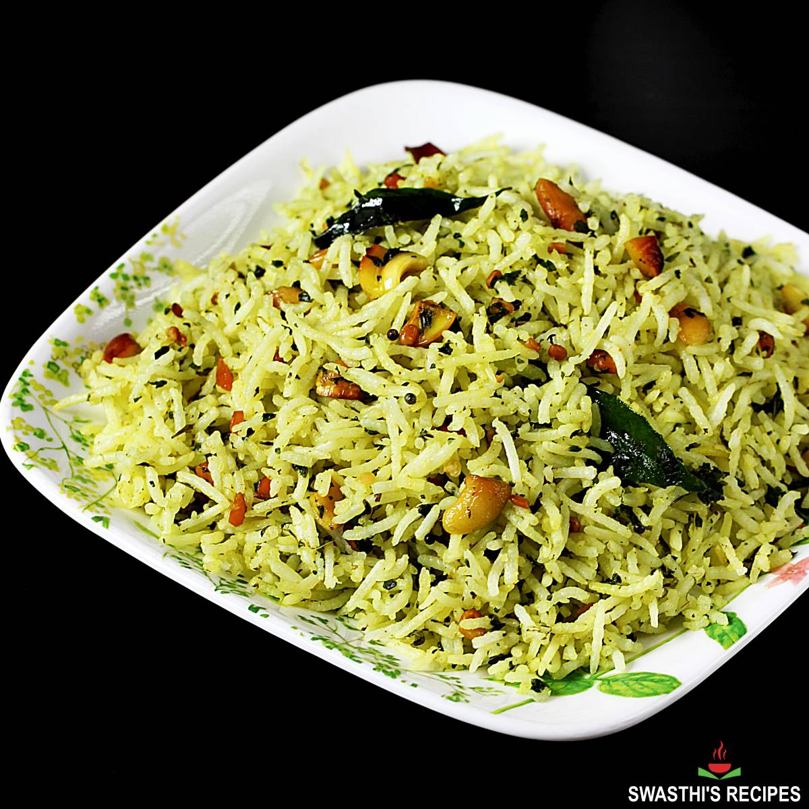

What is Pudina Pulao?
Pudina Pulao is a healthy, fragrant and delicious Indian dish made with rice, mint leaves and spices. 'Pudina' is a hindi word for 'mint leaes', which is a fragrant herb widely used in Indian cuisine to make chutney, curry, biryani, pulao and a lot of rice dishes.
This pudina rice is best served with some plain yogurt or onion-tomato raita or boondi raita. You can also serve some papad or salad or pickle as a side.
Just walk through the following steps and be surprised to end up with a bowl full of Lip smacking Pudina Pulao that serves 4

So lets get Started
Ingredients
- To grind in a smooth puree
- a handful of mint leaves
- 1/4 cup sliced onions or two shallots
- 1 inch ginger
- 1 clove garlic
- 2-3 slit green chillies
- 1 tsp fennel
- 2 tbsp curd
- 2 tbsp water
- For making pulao
- 2 tsp oil/ghee or a mix
- 1/2 inch cinammon stick
- 1 piece clove
- 1/2 cup thinly slice onions
- 1/4 cup potatoes chopped into big chuncks
- 1/4 cup chopped beans/carrot/peas
- 1/2 cup soya chunks/paneer/cooked chickpeas
- 1/2 tomato, cut into big slices
- 1/2 tsp turmeric powder
- 1/2 cup basmati rice washer, rinsed
- 1 tsp salt
- 3/4 cup hot boiling watr
- the mint puree has liquid and it is added to the pulao
Instructions
- Grind all ingredients listed under the 'To grind' section into a puree.
- Chop vegetables and soak soya chunks
- To a 2L pressure cooker, add oil/ghee, cinnamon, clove onions and cook until soft.
- Add potatoes and cook until it gets a slightly browned. About 2-3 minutes.
- Add beans, soya chunks and cook for another minute.
- Now, add the mint puree, followed by the tomatoes.
- Stir for a minute, add turmeric, salt and then the rice.
- Add hot water, mix well. Taste for salt and cook on a low to medium flame (200C on induction) for 1 whistle. Reduce flame to low and cook for another 4-5 minutes. Switch off.
- Let pressure settle, open and fluff up with fork before serving.
Go back to home page